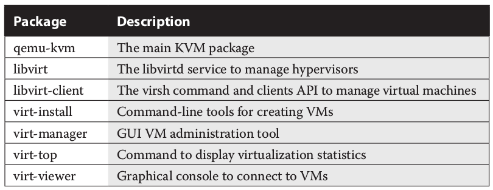

kvm¶
Does my CPU support Virtualization and is it enabled in BIOS / UEFI?¶
[gans@server1 ~]$ grep -c vmx /proc/cpuinfo
1
[gans@server1 ~]$
[gans@server1 ~]$ lsmod | grep kvm
kvm_intel 170086 0
kvm 566340 1 kvm_intel
irqbypass 13503 1 kvm
How to run nested KVM within VMWare ESXi (5.5)¶
- Shutdown the VM
2. Locate the guest hypervisor virtual machine configuration file (<VM-name.vmx>), edit and add the following line at the end
vhv.enable = "TRUE"
3. Identify the nested hypervisor vm ID and reload it’s configuration with the vim-cmd esxi command
~ # vim-cmd vmsvc/getallvms | grep -i 50_s1
30 RH_Lab122_50_s1 [datastore3] RH_Lab122_50_s1/RH_Lab122_50_s1.vmx rhel6_64Guest vmx-10
~ #
~ # vim-cmd vmsvc/reload 30
- Start the VM
5. Verify that the nested hypervisor correctly detects the vmx flag
[gans@server1 ~]$ grep -c vmx /proc/cpuinfo
1
Packages to install for KVM in RHEL¶
These can be installed via the GNOME Software Manager
As an alternative, install the Virtualization Host and Virtualization Client groups:
# yum group install "Virtualization Host" "Virtualization Client"